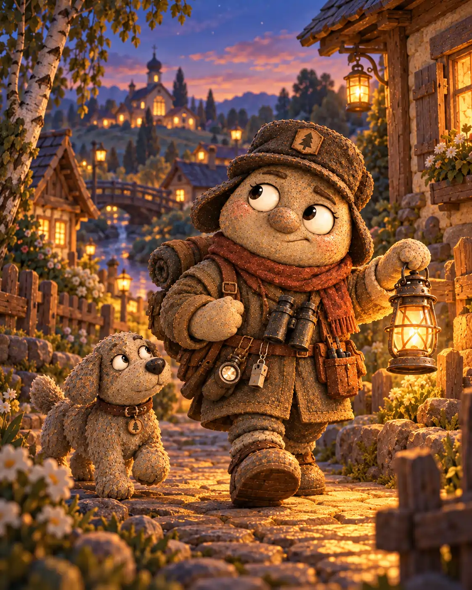
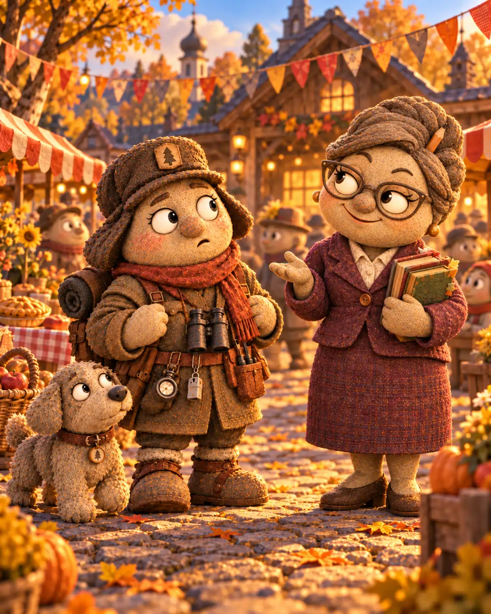
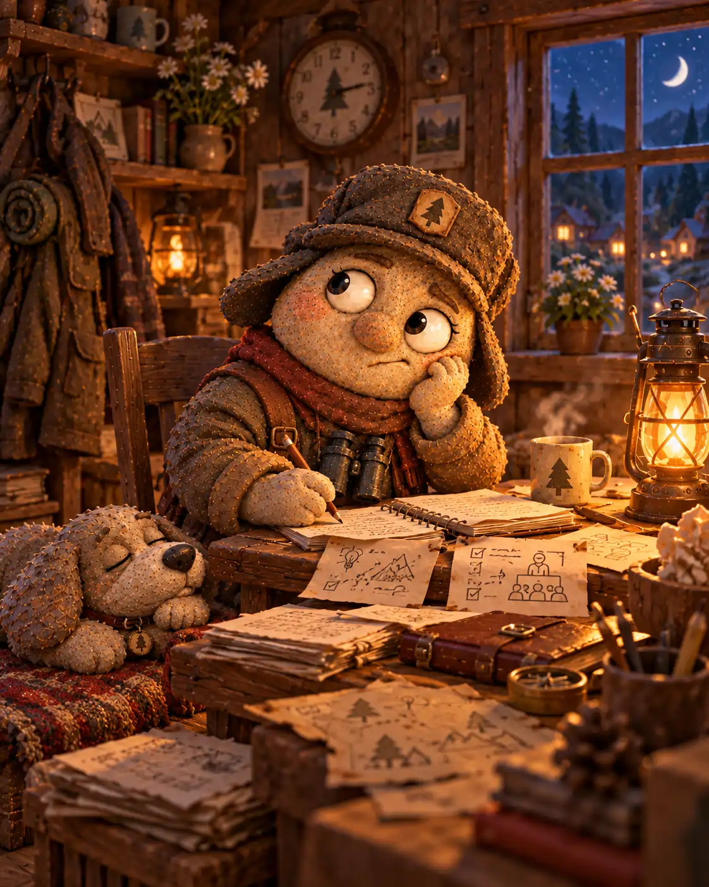
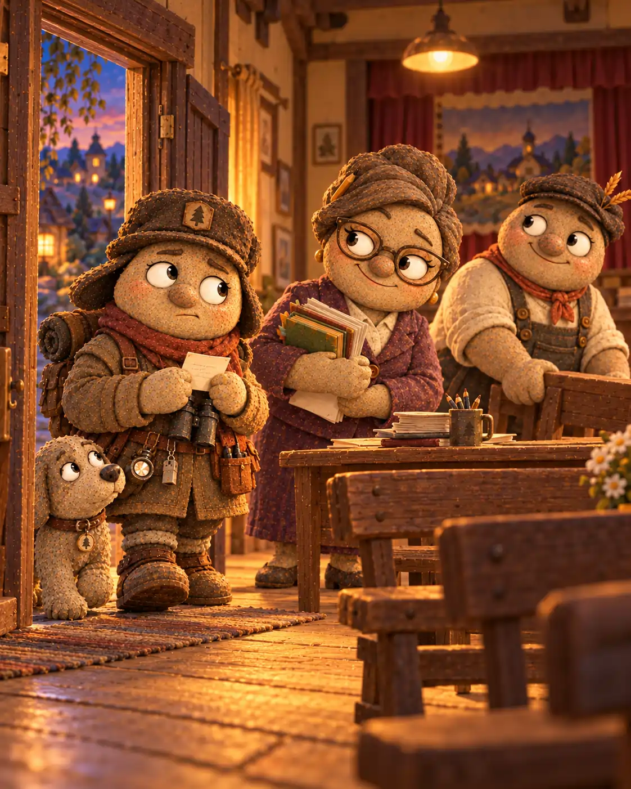

В Галькино было принято говорить, что ночью деревня спит спокойно благодаря Луке Щебёнкину. Сам Лука с этим не спорил, хотя знал: спокойствие требует немало труда. Перед вечерним обходом он проверял фонарь, ключи и калитку у клуба. Потом проходил вдоль лавки Дарьи Копейкиной, заглядывал к мельнице и возвращался на площадь. Если где-то скрипела доска, Лука выяснял причину. Если над крышами собирались тучи, смотрел, хорошо ли закрыты ставни.
Рядом с ним часто семенил его пёс — лохматый и удивительно беззаботный. Пёс считал, что лучшая проверка забора — убедиться, что под ним не спрятана косточка. Лука придерживался другого мнения и осматривал петли, щеколды и столбы. Удивительным образом оба оставались довольны прогулками.

Лука был внимательным сторожем. Он замечал оставленный у двери мешок, погасший фонарь и следы на влажной земле. Но иногда его предусмотрительность становилась тяжелее рюкзака, который он носил за плечами. Стоило подумать о возможной неприятности, как следом появлялись ещё три. А вдруг пойдёт дождь? А если дорогу размоет? А если дождя не будет, зато кто-нибудь забудет запереть ворота?
Впрочем, никто не сомневался, что Лука заботится о деревне искренне. Он просто хотел быть готовым ко всему — даже к тому, что едва ли могло случиться.
✦ ✦ ✦
Всё началось в субботу, когда на площади шумела осенняя ярмарка. Марфа Крошкина выставила пироги, Дарья расставляла товары на прилавке, а Прохор Мельников наконец позволил себе ненадолго отойти от мельницы. Лука обходил площадь, проверяя, не мешают ли корзины проходу.
Возле клуба его остановила Анфиса Миронова.
— Лука, в среду вечером у нас будет собрание жителей. Мы хотим поговорить о том, как сделать деревню удобнее и безопаснее. Ты столько всего замечаешь во время обходов. Расскажешь о своей работе?
Лука остановился. Он давно мечтал выступить перед соседями: объяснить, почему важна исправная калитка, куда обращаться, если не горит фонарь, и как одна вовремя замеченная мелочь помогает избежать большой беды. Но одно дело — думать об этом в тишине, и совсем другое — говорить перед полным залом.
— В среду? — переспросил он. — А сколько будет слушателей?

— Кто придёт. Наверное, человек двадцать.
— А если спросят что-нибудь, чего я не знаю?
— Так и скажешь, что выяснишь, — ответила Анфиса. — Ты ведь не обязан знать всё на свете.
Лука кивнул. Он согласился и даже улыбнулся. Однако по дороге домой уже представлял двадцать пар глаз, внезапный вопрос о сломанном мостике и собственное молчание посреди зала.
Вечером он достал чистую бумагу и написал заголовок: «О том, что нужно замечать вовремя». Под ним появились три понятных пункта: фонари, двери и дороги. Лука прочёл их вслух псу. Тот зевнул и устроился у печки. Для первой репетиции это показалось обнадёживающим.
✦ ✦ ✦
На следующий день Лука решил подготовить ответы на вопросы. Что делать, если на площади погаснут сразу два фонаря? К кому идти, если ветром сорвёт щеколду? Как проверить мостик после дождя? Все эти вопросы были разумными, и Лука старательно записывал решения.
Но затем он задумался: а вдруг на собрании спросят не о фонарях, а о старой тропе через лес? Пришлось достать карту Фомы Знаменского. Потом вспомнился сарай у мельницы: о нём тоже стоило сказать. К вечеру краткая речь превратилась в толстую стопку листов, причём самые важные мысли затерялись между подробностями.
Наутро Лука встретил Василису Камушкину у своего дома. Она как раз возвращалась из сада и спросила, отчего у него такой усталый вид.
— Готовлюсь к собранию, — признался Лука. — Кажется, мне надо предусмотреть все вопросы.
— Все не получится, — мягко ответила Василиса. — Но ты ведь знаешь свою работу. Расскажи людям то, что действительно может им пригодиться.
— А если я забуду нужные слова?
— Возьми три короткие заметки. И поспать не забудь.
Лука поблагодарил её. Совет был здравым, но вечером, перечитывая записи, он решил закончить ещё только один раздел. Затем ещё один. Во вторую ночь он лёг под утро, потому что переписывал речь начисто. Пёс несколько раз подходил к столу, толкал хозяина носом и уходил обратно к коврику.
Во вторник Лука почти ничего не добавил к выступлению. Вместо этого он представлял, как перепутает листы или заговорит слишком тихо. Проверил, заведены ли часы, приготовил чистую одежду и положил на стол маленькую карточку с тремя главными мыслями. Теперь у него действительно было всё необходимое. Оставалось отдохнуть.
Однако ночь перед собранием оказалась третьей бессонной ночью подряд. Лука лежал и вспоминал каждый возможный вопрос. Только под утро он наконец понял, как начать речь просто и без длинных объяснений: рассказать о случае, когда вовремя замеченная неисправная защёлка уберегла соседский сарай от ветра. Он облегчённо вздохнул, закрыл глаза и крепко уснул.

✦ ✦ ✦
Проснулся Лука оттого, что пёс настойчиво тянул за край одеяла. За окном стояла непривычная тишина. Лука сел, взглянул на часы и не сразу поверил стрелкам: собрание закончилось почти час назад.
Он так торопливо вскочил, что уронил со стола листы. Взял лишь карточку с тремя пунктами, выбежал на улицу и направился к клубу. По дороге ему встретился Тимофей Булыжников, возвращавшийся с письмами.
— Лука! Мы тебя ждали, — сказал почтальон. — Анфиса начала собрание без тебя. Все надеялись, что ты придёшь.
— Я готовился, — выдохнул Лука. — Три ночи готовился.
У клуба уже закрывали окна. Анфиса собирала бумаги, а Прохор помогал ей сдвинуть скамейки. Лука остановился в дверях, сжимая карточку так крепко, что она помялась.
— Простите, — сказал он. — Я проспал. Я хотел всё объяснить правильно, а в итоге ничего не рассказал.

Анфиса посмотрела на его измученное лицо.
— Мы беспокоились, не случилось ли с тобой чего-нибудь. Хорошо, что ты пришёл. И тебе не нужно было готовить целую книгу, Лука. Мы пригласили тебя потому, что ты хорошо знаешь деревню, а не потому, что ждём безупречной речи.
Прохор, придерживая скамейку, добавил:
— Я тоже откладывал отдых, пока всё не переделаю. Только дела почему-то не кончались. Ты, кажется, нашёл похожую ловушку.
Лука хотел оправдаться, но вдруг вспомнил, как с особой тщательностью проверял часы, а о самом простом — вовремя лечь спать — так и не позаботился. От этой мысли стало обидно. И немного смешно.
— Я всё-таки успел придумать начало, — тихо сказал он и развернул карточку. — Правда, теперь уже некому рассказывать.
— Мне можно, — ответила Анфиса. — И Прохору, если он не спешит.
Лука взглянул на них, вздохнул и впервые произнёс свою речь без толстых записей. Он рассказал о калитке у клуба, которую нужно починить, о фонаре возле моста и о том, как важно сообщать об опасной мелочи сразу, а не ждать, пока она станет большой неприятностью. На всё ушло несколько минут.
— Вот именно это и надо было услышать, — сказала Анфиса. — Я внесу твои замечания в запись собрания. А на следующем мы дадим тебе слово в самом начале.
Лука покраснел от удовольствия. Собрание он всё-таки пропустил, и никакие добрые слова не могли это изменить. Но его советы пригодились, а мечта выступить перед всеми ещё оставалась впереди.
✦ ✦ ✦
В тот вечер Лука снова пошёл в обход с фонарём и псом. У клуба он поправил незакрытую ставню, а на площади заметил, что один из фонарей светит тусклее обычного. Он сделал пометку, чтобы утром сообщить Кузьме Лаптеву. Остальную часть дороги прошёл спокойно: не пытался заранее продумать всё, что могло произойти до зимы.
Дома он убрал большую стопку записей в ящик. На столе оставил только карточку: «Замечать. Сообщать. Помогать». Затем завёл часы, поставил фонарь у двери и лёг спать. Пёс устроился рядом и на этот раз даже не успел зевнуть первым.
На следующем собрании Лука пришёл заранее. Когда Анфиса назвала его имя, он волновался не меньше прежнего, но всё же поднялся и вышел к соседям. Карточка лежала у него в ладони. Лука посмотрел в зал и начал с того самого случая про защёлку сарая.
Никто не требовал от него ответов на все вопросы. Зато после выступления несколько жителей сами рассказали, что заметили на своих улицах. Лука выслушал их и записал самое важное. Оказалось, заботиться о безопасности деревни гораздо легче вместе.
В Почтовом архиве Галькино позднее появилась запись:
«Лука Щебёнкин, сторож. Первое собрание проспал после трёх ночей подготовки. На следующем выступил с короткой речью и выслушал соседей. Вывод: предусмотрительность помогает, когда помнишь не только о возможных неприятностях, но и о собственном отдыхе».